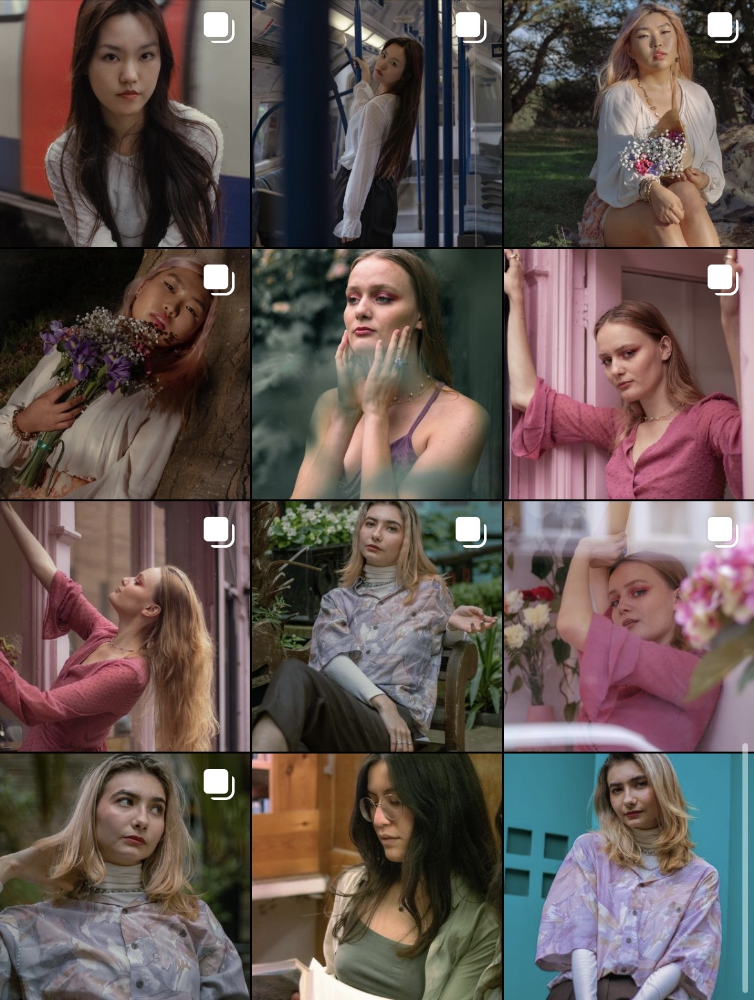

My Hobbies
Photography
Here is some of my work:

Check out more of my work here
Cooking/Eating
I love eating as much as the next person, but I also like to try new recipes here and there
Reading
Some of my book recommendations:
- What you are looking for is in this library, Michiko Aoyama - A very wholesome book that shows you how many different lives and their perspectives.
- Daughter of the Moon Goddess, Sue Lynn Tan - You will love this if you like fantasy,or Chinese Historical dramas
- Pachinko, Min Jin Lee - Looks at the struggles through generations, I think this is very relatable as a first gen immigrant
Look for me on GoodReads: Hui Eng Lim